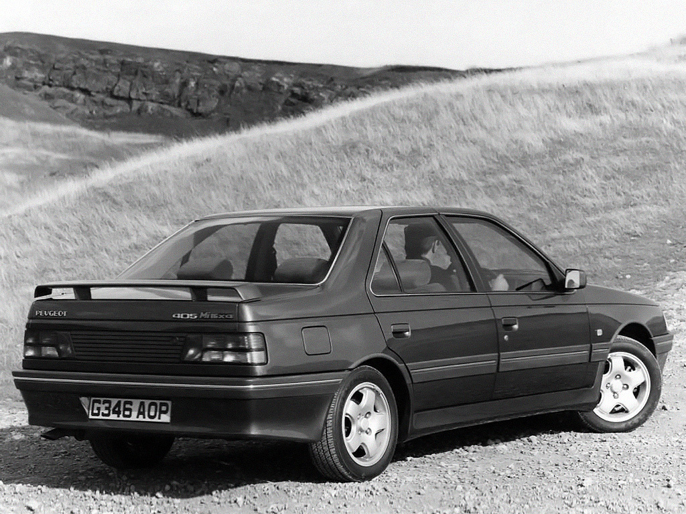
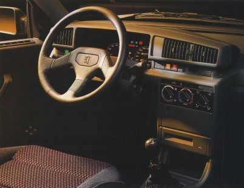

Historia del 405
1987
Los inicios
En marzo de 1987 fue presentado el Peugeot 405, fruto de la colaboración entre la marca de automóviles y el estudio del diseñador Sergio Pininfarina ( que ya había creado otros modelos de Peugeot) primero en versión sedán, y en mayo del año siguiente en versión familiar denominada 405 Break.
En 1988 fue designado Coche del Año en Europa, imponiéndose al Citroën AX y a a la tercera generación del Honda Prelude.
Originalmente, los primeros 405 ofrecidos por Peugeot eran las versiones GL, GR, SRI y Mi16. El GL era el modelo más básico, que montaba con un motor 1.4 de 65 CV y 4 velocidades, que pronto se ofreció también uno 1.6 de mayor potencia, el mismo montado en el GR. El SRI era el primero en montar motor de inyección, un 1.9 de 125 CV.
La versión deportiva de la gama 405 fue el Mi16, que poseía un motor 1.9 similar al del SRI, pero de 16 válvulas e inyección multipunto Bosch, alcanzando los 160 CV, aunque debido a las normativas antipolución de algunos países (como EE.UU. o Japón) se creó una variante que incluía un escape con catalizador, que reducía las emisiones pero bajaba su potencia hasta 145 CV. Estéticamente, el Mi16 se caracterizaba por un aspecto más deportivo, con alerón trasero, paragolpes más voluminosos, taloneras laterales, llantas de aleación (primero de 14 y posteriormente de 15 pulgadas) y asientos y volante deportivos, todo de serie. Además, fue el primero de la gama en incluir un primitivo sistema de frenos ABS.
(Presentación Mi16)
Un año después, en marzo de 1988, llegaron las motorizaciones diésel, una atmosférica (1.9 de 69 CV) y otra turbo (1.8 de 90 CV), aplicándose a toda la gama con las denominaciones GLD, GRD, GRDturbo y SRDturbo. Además se presentó también como opción la caja de cambios automática.
Ya en 1989, se presentan las versiones de tracción integral a las 4 ruedas, GRx4 y SRx4, a las que se uniría en 1990 la versión deportiva Mi16x4 que incluía diferenciales autoblocantes (Ferguson en el grupo central/delantero y Torsen en trasero). Además, estas versiones equipaban en el eje trasero una suspensión hidroneumática autonivelante, fabricada por Citroën, para asegurarse que se mantenía a la altura correcta del eje en todo momento y proteger el diferencial trasero de posibles golpes.
Interior de la primera serie.
En mayo de 1991 sale a la luz la primera serie especial: el 405 Roland Garros, una versión Break limitada a 400 unidades con motivo del patrocinio de Peugeot en el conocido evento deportivo. Se vendía solo en color verde oscuro (llamado verde sorrento), con el motor 1.9 de 125 CV, techo solar eléctrico y tapicería de cuero blanco, entre otros extras. El mismo año comienza a venderse en Suiza el Mi16 Collection, y al año siguiente el SRI Suisse, disponibles solo en color gris magnum metalizado y verde sorrento respectivamente, igual a los de serie pero incluyendo todos los extras, como lavafaros, tapicería de cuero y ABS. En España se lanza el GTX, una versión deportiva del SRI, con llantas de aleación de 14 pulgadas, alerón, volante y tapicería deportiva en el interior.
Para celebrar la victoria de Peugeot en las 24 Horas de Le Mans en 1992, Peugeot Suiza comercializó el Mi16 Le Mans, una serie limitada en color blanco solo diferenciable de la versión normal por los logotipos de «Le Mans» y por incluir todos los extras de serie. También en ese año se lanzó en Bélgica la versión Quartz solo disponible en sedán y en tres colores grises.